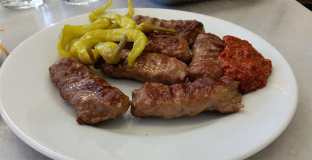
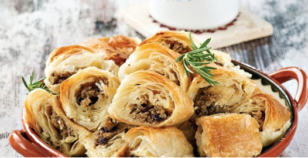

iSTANBUL
İstanbul, yerleşim tarihi 300 bin, kentsel tarihi yaklaşık 3 bin, başkentlik tarihi 1600 yıla kadar uzanan bir şehirdir.1204-1261 arasındaki Haçlı istilası haricinde(330-1923) Roma İmparatorluğu, Bizans İmparatorluğu ve Osmanlı İmparatorluğu’nun üç imparatorluğa başkentlik yaparak, 16 yüzyıl boyunca batıda Tuna Nehri’nden doğuda Pers İmparatorluğu’na kadar olan geniş coğrafyasında bölgenin tek hakimi olmuştur. daha fazlası için tıklayınız
Gezilecek Tarihi Yerler
Ayasofya
İstanbul’un gözbebeği Tarihi Yarımada’yı gezmeye başlamak için en doğru yer Ayasofya Cami. Dünyanın en tanınmış ibadethanelerinden biri olarak aynı yerde 3 defa inşa edilen Ayasofya, son halini 537 yılında aldı. Ayasofya’nın ibadete açıldığı gün İmparator Justinianos’un, “Tanrım bana böyle bir ibadet yeri yapabilme fırsatı sağladığın için şükürler olsun” dediği ve Kudüs’teki Hz. Süleyman Mabedi’ni kastederek “Ey Süleyman seni geçtim” diye bağırdığı rivayet ediliyor.. İstanbul’un fethinden sonra cami olarak ibadete açılan Ayasofya’nın içine mihraplar, minber, müezzin mahfilleri, vaaz kürsüsü ve maksureler eklendi.
Topkapı Sarayı
Osmanlı İmparatorluğu, dünyanın en geniş sınırlara ulaşmış ve yüzyıllarca hakimiyetini sürdürmüş imparatorluklarından biri. Bu köklü tarihin ve ihtişamlı yapının 400 yıl boyunca yönetildiği, sultanların ve ailelerinin yaşadığı Topkapı Sarayı ise bütün görkemiyle Tarihi Yarımada’da görülmeyi bekliyor.
Osmanlı’nın en şatafatlı düğünlerinin, tahta çıkma törenlerinin ya da entrikalarının ve hüzünlü hikayelerine şahit olan bu sarayda burada kendinizi tarihin kollarına bırakarak eşsiz bir tarih ziyafetine ortak olabilirsiniz. Topkapı Sarayı Müzesi ve Harem Gezisi’nde görülecek yerler arasında sarayın Harem bölümü, Hırka-ı Saadet Dairesi ve Has Oda bölümü, Babü’s Saade bölümü ve Köşkler Bahçesi bölümü bulunuyor.
Kapalı Çarşı (Grand Bazaar)
Tarihi Yarımada’nın en gözde duraklarından biri de Beyazıt’ta 550 yıldır ayakta duran Kapalı Çarşı. Yabancıların Grand Bazaar adıyla tanıdığı Kapalı Çarşı , içinde kaybolacağınız sokakları ve dünya altın piyasasına yön veren kuyumcularıyla ünlü.
İstanbul’un en eski çarşısının içinde alışveriş yapmanın yanı sıra, burada satılan her şeyin İstanbul’un kadim ruhunu yansıttığını göreceksiniz.
Kız Kulesi
Üsküdar-Beşiktaş motorlarıyla karşıya geçerken yanından geçtiğimiz nazlı güzel Kız Kulesi hakkında sayısız efsane var…
İstanbul’un en romantik simgelerinden olan Kız Kulesi, 2000 yılında restore edilerek bir restoran olarak hizmet vermeye başladı. Üsküdar sahilden teknelerle 5 dakikada ulaşılan Kız Kulesi’nde evlenme teklif etmek, İstanbul’un adetlerinden biri haline geldi. Kız Kulesi’ni gezmek için restoranda yemek yeme şartı bulunmuyor, yalnızca tekneyle geçiş ücretini ödeyerek, Kız Kulesi’ni yakından görebilirsiniz.
Galata Kulesi
Bugün en tepesine çıkıp İstanbul manzarasını seyretmek için uzun kuyrukların beklendiği Galata Kulesi, İstanbul’un siluetini çizen en önemli simgelerden biri.
528 yılında inşa edilen yapı, İstanbul Boğazı ve Haliç’e akim konumda, bir fener kulesi olarak inşa edilmiş ama dönem dönem zindan olarak da kullanılmış.
Kuleye birlikte çıkan âşıkların sonunda evlendikleri, kuleyle ilgili rivayetlerin en popüler olanı…
Rumeli Hisari
Fatih Sultan Mehmet’in İstanbul’un Fethi esnasında Karadeniz’den Bizans’a gelebilecek yardımları kesmek amacıyla 90 günde yapılan Rumelihisarı,amacına uygun olarak Boğazkesen Hisarı adıyla da biliniyor.
Üç büyük kulesi ve surlarıyla muhteşem bir yapı olan Rumelihisarı, Boğaz’ın iki kıyısının birbirine en çok yaklaştığı nokta’da Anadolu Hisarı’nın tam karşısında yer alıyor.
Bir zamanlar Rumelihisarı Konserleri gibi açık hava etkinliklerinin gerçekleştiği hisar, günümüzde müze olarak ziyarete açık.Rumeli Hisarı Müzesi’nde İstanbul’un fethinde kullanılan toplar, gülleler ve Haliç’i kapattığı söylenen zincirin bir parçası hala sergileniyor
Meşhur Yemekleri
Eminönü Balık Ekmek
Balık ekmeğin serüveni Galata Köprüsü’nde başladı. Ekmek arasında balık satan bu tekneler, ilk kuruldukları yıllarda sahile değil Galata Köprüsü’ne yanaşıyordu. Kıyıda kalıcı olarak kalma izninin alınmasıyla birlikte, balık ekmek tekneleri 12 yıl önce Galata Köprüsü’nden Eminönü sahiline taşındı. Teknelerin konumu değişse de sundukları lezzet ve gördüğü ilgi hiç değişmedi.
Ortaköy Kumpiri
Ortaköy’ün en sevilen ve bilinen lezzetlerinden olan Kumpir, özellikle turistler tarafından çokça tercih edilmektedir. Sadece turistler değil yolu Ortaköy’e düşen İstanbulluların da yemekten son derece zevk aldığı bu lezzeti denemeyi unutmayın.
Sultanahmet Köftesi
Köfte severlerin muhakkak denemesi gereken Sultanahmet Köftesinin lezzeti bir başka. Sultanahmet köftecilerinin en eskisi, 1920 yılında açılan Tarihi Sultanahmet Halk Köftecisi Selim Usta’dır ancak semtin her noktasında bu muhteşem lezzete rastlamanız da mümkün
Sarıyer Böreği
Böreğin her türlüsü var ülkemizde belki de. Her yörede ayrı güzel olan börek çeşitlerimizi bir yana koyalım ne bugün İstanbul’un nefis Sarıyer böreğine bakalım. Peynirli, kıymalı, ıspanaklı ve patatesli çeşitleriyle Sarıyer sokaklarını mis gibi kokutan bu böreğin kendine has bir lezzeti var.
Tarihi Camiler
Süleymaniye Camii
Dünyanın tanıdığı ismiyle Muhteşem Süleyman, yani Kanuni Sultan Süleyman tarafından 1551-1557 yılları arasında Mimari Sinan’a yaptırılan Süleymaniye Camii, Beyazıt’ta yer alıyor.
Büyük bir alana kurulu Süleymaniye Külliyesi; medreseler, hazire, hastane, sıbyan mektebi, hamam, kütüphane, imaret ve dükkânlarla beraber Süleymaniye Camii’nden oluşuyor. Mimar Sinan, Kanuni Sultan Süleyman ve Hürrem Sultan’ın türbeleri, Süleymaniye Külliyesi’nde yer alıyor.
Süleymaniye Camii hakkında ilginç bilgiler edinmenin en iyi yolu camiyi gidip bizzat görmek. Camiyi böcek ve akrep istilasından koruyan devekuşu yumurtaları, Mimari Sinan’ın haftalarca boş küplerle hesapladığı akustik ve yağ kandillerinin isinden mürekkep üretilmesi gibi birçok yaratıcı fikir, hayranlığınızı ikiye katlayacak
Sultanahmet Camii
İstanbul’un en ünlü camisi hangisidir diye sorarsanız, pek çok kişiden Sultanahmet Camii yanıtını alırsınız. Tüm dünyanın Mavi Cami (Blue Mosque) adıyla tanıdığı Sultanahmet Camii, 6 minaresi ve içini süsleyen mavi İznik çinileriyle ünlü.
Osmanlı Padişahı I. Ahmet tarafından 1609-1617 yılları arasında Mimar Sedefkâr Mehmed Ağa’ya yaptırılan Sultanahmet Camii, Ayasofya’nın tam karşısında yer alıyor ve güzelliğiyle ona meydan okuyor. Klasik Osmanlı mimarisinin en önemli eserlerinden biri olan Sultanahmet Camii, ihtişamını büyüklüğünden değil zarafetinden alıyor.
Eyüp Sultan Camii
İstanbul’daki en önemli camilerden biri olan Eyüp Sultan Camii, Haliç’te yer alıyor. Hz. Muhammed’in bayraktarlığını yapan Ebu Eyyûb el-Ensarî’nin 7. yüzyılda İstanbul kuşatması esnasında şehit düşerek buraya defnedildiğine inanılıyor. Eyüp Sultan Türbesi’nin hemen yanına inşa edilen Eyüp Sultan Camii İstanbul’un fethinin ardından 1458’de Fatih Sultan Mehmet’in emriyle yapılmış.